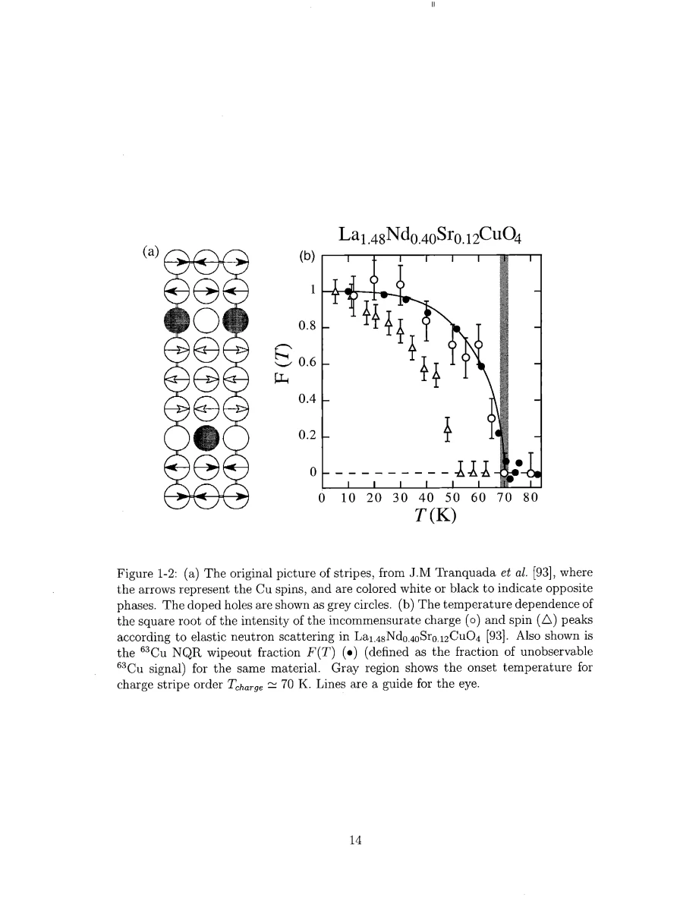

Singer · supplied source 2002 · chapter unit
1. Why broad spectra are a scientific question
A broad line is a clue; frequency-dependent dynamics and temperature dependence make it a testable electronic question.
The question: What evidence distinguishes electronic variation from a chemically imperfect sample?
Before you start: the terms you need
- Nominal x: Sr atoms per LSCO formula unit, used as the average hole-doping label.
- Electric field gradient (EFG): curvature of the electric potential at a nucleus; determines the Cu quadrupole resonance.
- Knight shift: the nuclear resonance shift caused by electronic magnetic response, with orbital and spin contributions.
- T₁ and T₂: recovery of longitudinal nuclear magnetization and decay of transverse coherence; they answer different questions.
- Hyperfine form factor: the wavevector-dependent weighting through which a nucleus samples electronic spin fluctuations.
- HWHM: half width at half maximum; the thesis also defines an effective width from the second moment.
See → explain → check
Follow the idea in 3 pictures.
Picture 1 / 3
Three different kinds of variation
Look for: Keep composition, local charge environment and electronic response separate.
Swipe across the picture to read every label, or enlarge it below.
- Chemical average
- Local EFG
- Local spin response
Teaching schematic; no measured points or calibrated scales.
One nominal x does not by itself enforce identical local spin response.
Picture 2 / 3
A signal can vanish before the echo
Look for: Follow the experimental window from fast averaging to slow fluctuations.
Swipe across the picture to read every label, or enlarge it below.
- Fast
- Relaxation window
- Slow
Qualitative timescale map; no numerical thresholds or inferred stripe order are drawn.
Wipeout is partly a visibility question, so observed nuclei can be a selected subset.
Picture 3 / 3
Connect observation to competing explanations
Look for: Broadening, dynamics and sample comparison constrain different alternatives.
Swipe across the picture to read every label, or enlarge it below.
- Broad spectra
- Frequency-resolved T₁
- Sample comparisons
- Test explanations
Teaching schematic; no measured points or calibrated scales.
An explanation should account for the correlated observations together.
Explain it back.
Try answering aloud before opening the explanation.
Can bulk composition uniformity exclude nanoscale electronic variation?
No. It constrains composition at the characterization length scale; local spectroscopy probes a different quantity and scale.
Do distinct probe onsets prove distinct thermodynamic transitions?
Not necessarily. Glassy slowing can cross different instrumental windows at different temperatures.
Go deeper Follow the full argument
From average composition to local response
Nominal x states how many Sr ions occur per chemical formula on average. It need not say that every microscopic part of a CuO₂ plane has the same electronic response. Singer frames this issue against LSCO's antiferromagnetic, superconducting and low-temperature stripe phenomenology. The parent compound is a spin-½ square-lattice antiferromagnet; small hole additions radically change long-range order while substantial spin fluctuations persist. This background makes a spatial distribution of hole response physically consequential. However, the historical phase diagram is motivation, not a calibration that identifies a given NQR wing as a unique thermodynamic phase. The working question is operational: do nuclei at different resonances show different local dynamics, and can those differences be reconciled with both charge-sensitive and spin-sensitive measurements? It is important to retain the distinction between a macroscopically uniform solid solution and an electronically uniform state on nanometre scales.
PDF p. 10 · PDF p. 11 · PDF p. 12 · PDF p. 19 · PDF p. 20 · PDF p. 21
Wipeout depends on the observation window
The introduction reviews earlier measurements where Cu echo intensity decreases as stripe-related fluctuations slow. Wipeout fraction F(T) denotes the fraction of Cu signal no longer observed, after the experimental corrections used in that work. In selected Nd-doped samples near one-eighth doping, its temperature dependence resembles the charge-stripe order parameter from scattering. Below one-eighth, a gradual tail precedes a more collective increase. Singer treats that difference as an unresolved clue, then returns to it after measuring the distribution of local electronic states. Different onset temperatures among neutrons, muons and NQR need not describe inconsistent transitions: each probe has a different timescale or resolution. The NQR echo also requires transverse coherence to survive the pulse separation. An excessively fast T₂ can remove a region from the echo even while its nuclei remain present. Thus a stripe comparison can support an interpretation in a specified sample without making wipeout a universal direct stripe-order meter.
PDF p. 13 · PDF p. 14 · PDF p. 15 · PDF p. 16 · PDF p. 17 · PDF p. 18 · PDF p. 19
What has to be ruled out
The thesis explicitly tests the idea that its polycrystalline specimens merely have poor macroscopic mixing. It compares frequency-dependent relaxation with high-quality single-crystal results and later compares local distributions with chemical and diffraction characterization. A temperature-growing electronic spread is difficult to attribute solely to fixed Sr-composition variation. At the same time, the model must retain real alloy disorder: Sr ions do change local EFGs. The eventual argument is not that disorder has no effect. It is that uniform holes plus random ionic EFG broadening do not fully explain the measured dynamics and linewidths. This distinction prevents a false choice between perfect chemical order and all-electronic broadening.
PDF p. 19 · PDF p. 20 · PDF p. 21 · PDF p. 23 · PDF p. 24 · PDF p. 27
Translate the mathematics Essential equations and their meaning
Read the evidence Guided original source pages

PDF p. 14
What the evidence supports—and where it stops
- The introduction summarizes earlier stripe studies in several 214 compounds; do not transfer each numerical onset to the new LSCO sample set.
Source version, reading coverage and preservation
Every substantive chapter and appendix was read from locally generated Windows OCR of the scanned original. Key figures, symbols, equations and boundaries were checked on readable full-page renders; PDF and printed page numbers agree at inspected locations.
Reviewed body pages: 10, 11, 12, 13, 14, 15, 16, 17, 18, 19, 20, 21, 22, 23, 24, 25, 26, 27, 28, 29, 30, 31, 32, 33, 34, 35, 36, 37, 38, 39, 40, 41, 42, 43, 44, 45, 46, 47, 48, 49, 50, 51, 52, 53, 54, 55, 56, 57, 58, 59, 60, 61, 62, 63, 64, 65, 66, 67, 68, 69, 70, 71, 72, 73, 74, 75, 76, 77, 78, 79, 80, 81, 82, 83, 84, 85, 86, 87, 88, 89, 90, 91, 92, 93, 94, 95, 96, 97, 98, 99, 100, 101, 102, 103, 104, 105, 106, 107, 108, 109, 110, 111, 112, 113, 114, 115, 116, 117, 118, 119, 120, 121, 122, 123, 124, 125, 126, 127, 128, 129, 130, 131, 132, 133, 134, 135, 136, 137. Bibliography pages 138–144 were not independently verified against every cited publication. Front matter was inspected for title, abstract and chapter mapping. The guide does not claim manual visual reading of every scan or exact transcription of all derivations; OCR is imperfect and the damaged abstract region was checked against the conclusions.
Source SHA-256: e5fdb96ea81a06f7a51624e02fa58319dc3d21926a030e06fbbedc7061f5937d. Original file bytes preserved locally, and in this room’s original download.
Thesis - Singer - 2002 - Nuclear resonance of electronic inhomogeneity in LSCO.pdf